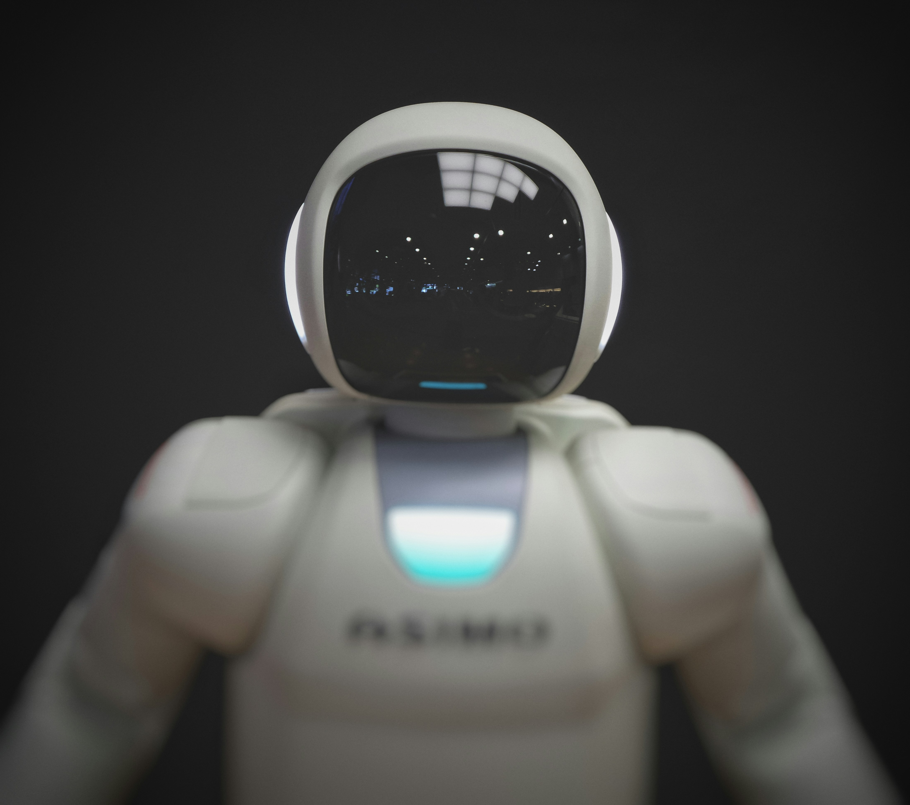

    <div class="container mt-1 p-0"> 
          <!-- Page content-->
        <div class="container mt-5">
            <div class="row">
                <div class="col-lg-8">
                    <!-- Post content-->
                    <article>
                        <!-- Post header-->
                        <header class="mb-4">
                            <!-- Post title-->
                            <h1 class="fw-bolder mb-1">Tehisintellekt ja generatiivsed mudelid: Loojad või ohud?</h1>
                            <!-- Post meta content-->
                            <div class="text-muted fst-italic mb-2">Postitatud 20.03.25
                        </header>
                        <!-- Preview image figure-->
                        <figure class="mb-4"></figure>
                        <!-- Post content-->
                        <section class="mb-5">
                            <p class="fs-5 mb-4">Tehisintellekti areng on viimastel aastatel olnud plahvatuslik. Generatiivsed mudelid, nagu ChatGPT ja DALL·E, muudavad tööjõuturgu, loovtööstust ja igapäevaelu, kuid toovad kaasa ka eetilisi väljakutseid.</p>
                            <p class="fs-5 mb-4">Generatiivne tehisintellekt suudab luua tekste, pilte, muusikat ja isegi programme. See muudab näiteks turunduse ja disaini palju efektiivsemaks, kuid samas tekib küsimus autentsuse ja töökohtade tuleviku kohta.</p>
                            <h2 class="fw-bolder mb-4 mt-5">Kus generatiivne AI juba muutusi toob?</h2>
                            <p class="fs-5 mb-4">Kirjutamine ja sisu loomine: AI genereerib uudiseid, blogipostitusi ja turundustekste.
                                Kunst ja disain: Pildigeneraatorid, nagu DALL·E, võimaldavad igaühel luua professionaalseid illustratsioone.
                                Programmeermine: AI-assistendid nagu GitHub Copilot aitavad koodi kirjutada ja vead parandada.</p>
                        </section>
                        <hr>
                        <!-- Kategooriad -->
                        <p class="text-primary"><i>Kategooriad: tehnoloogia, areng, maailm</i></p><br>
                        <!-- Nupud-->
                        <a class="badge bg-secondary text-decoration-none link-light" href="?page=post1">Eelmine postitus
                        <a class="badge bg-secondary text-decoration-none link-light" href="?page=post3">Järgmine postitus</a>
                    </article>


    </div>
